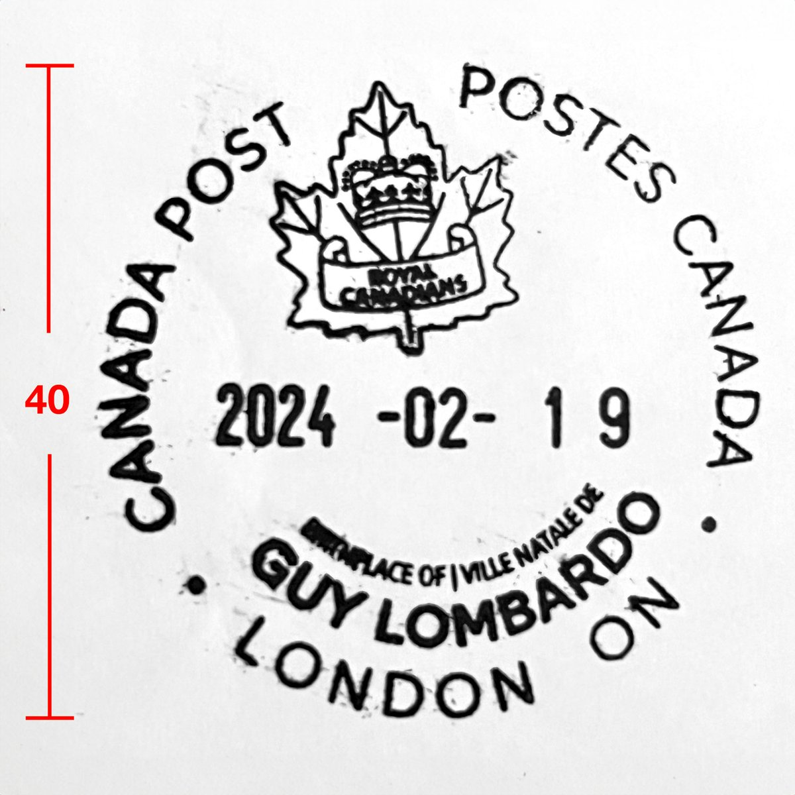

London STN BRC pictorial cancel
Royal Canadians – Birth Place – Ville Natale de Guy Lombardo · Version 2
- Status
- Active
- Run dates
- ? to present
- Design
- "ROYAL CANADIANS / BIRTH PLACE / VILLE NATALE DE GUY LOMBARDO"; maple leaf shape, logo
- Ink colour
- Black
- Designer
- Unknown
- Post office
- London STN BRC
A - 387 Wellington Rd
London, ON
N6C 5Y0 - Subjects
- maple, leaf, logo, Royal Canadians, people, musician, art, performer, birthplace, bandleader, violinist
Collect it by mail. Send your stamped covers, with a stamped return envelope, to the post office address above. How to collect pictorial cancels by mail · en français
 London STN BRCVersion 1
London STN BRCVersion 1 Ingersoll STN MainINGERSOLL CHEESE MUSEUM
Ingersoll STN MainINGERSOLL CHEESE MUSEUM Beachville POBaseball
Beachville POBaseball Tillsonburg Main POOtter
Tillsonburg Main POOtter